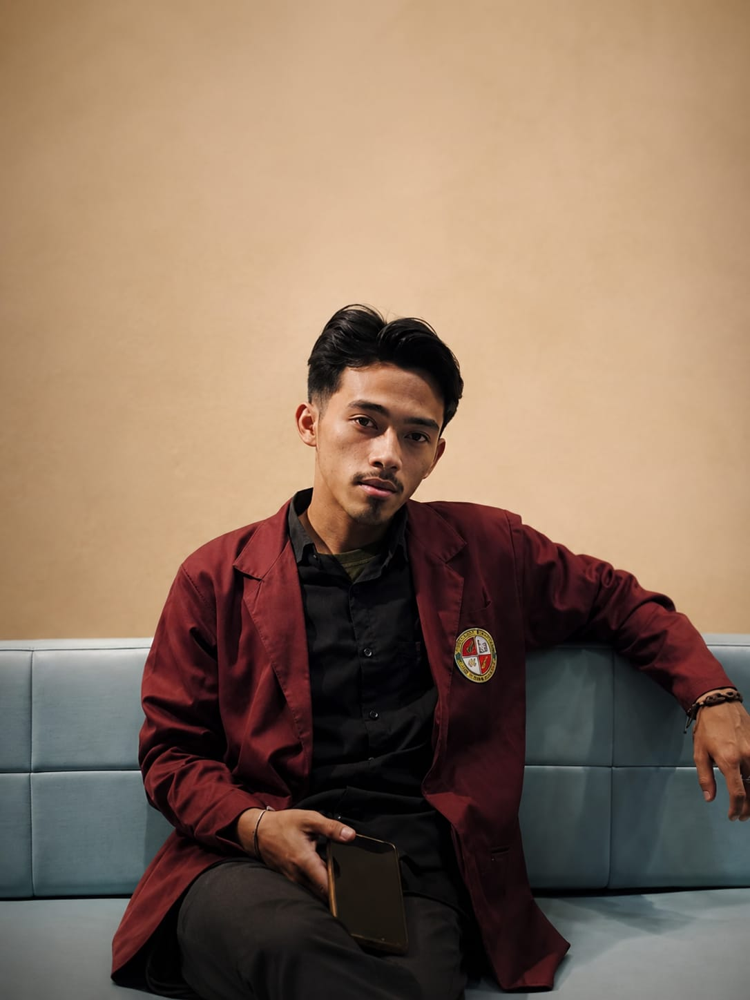
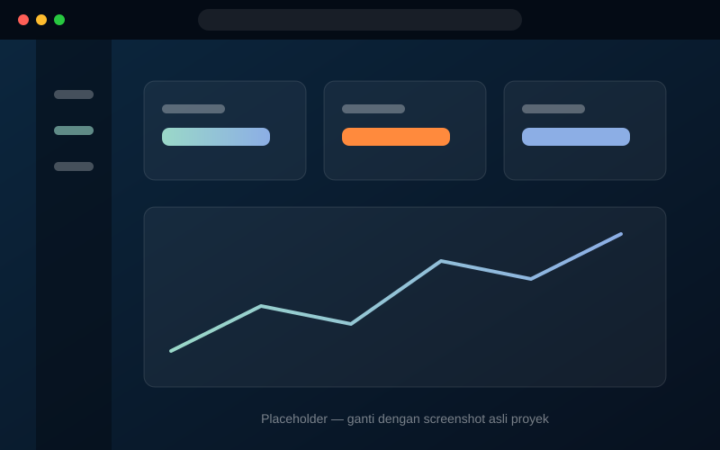

Frontend
Menggunakan HTML, CSS, dan JavaScript untuk membangun halaman yang bersih, modern, dan mudah dipahami.
- Layout responsif
- Desain antarmuka
- Interaksi sederhana
HTML / CSS / JavaScript / Bootstrap / Tailwind
Saya membangun kemampuan di bidang pengembangan web dan IoT, dengan minat utama pada desain yang bersih, struktur yang rapi, dan solusi digital yang bisa langsung dipakai.
Identitas

Teknik Informatika
Tentang Saya
Saya adalah individu yang tertarik pada desain antarmuka, struktur halaman yang rapi, dan ide-ide yang dapat diubah menjadi produk digital yang berguna.
Studi Saat Ini
Program Studi Teknik Informatika
Bandung, Jawa Barat
Saya fokus pada pengembangan web, desain antarmuka, dan eksplorasi teknologi IoT yang aplikatif.
Garis Waktu Pendidikan
Kp. Sindangsari, Desa Ciluluk, Cikancung, Bandung, West Java 40396
Lulus SD pada tahun 2017.
Kp. Dukuh Ibun Terusan, Mekarwangi, Ibun, Bandung Regency, West Java 40384
Pendidikan menengah pertama, menyelesaikan MTs pada 2020.
Cihea, Haurwangi, Cianjur Regency, West Java 43283
Jurusan TBSM (Teknik Bisnis Sepeda Motor). Menyelesaikan SMK pada 2023.
Jl. Pelajar Pejuang 45 No.8, Lengkong, Bandung, Jawa Barat 40263
studi S1 (Teknik Informatika), menyelesaikan pada 2027.
Ringkasan Profesional
Saya fokus pada pengembangan antarmuka pengguna yang responsif, navigasi yang jelas, serta ide-ide digital yang dapat diterapkan dalam proyek nyata.
Menggunakan HTML, CSS, dan JavaScript untuk membangun halaman yang bersih, modern, dan mudah dipahami.
Memahami dasar perangkat terhubung dan cara mengintegrasikannya ke dalam sistem yang lebih luas.
Saya terus belajar melalui proyek mandiri, eksperimen, dan pengembangan kemampuan yang relevan dengan kebutuhan zaman.
Fokus Utama
Saya berfokus pada interface yang bersih, struktur yang terorganisir, dan pengalaman pengguna yang jelas dalam setiap proyek.
Menampilkan identitas, nilai belajar, dan arah pengembangan saya secara lebih profesional.
Memahami teknik dasar pembuatan halaman responsif yang berbasis kebutuhan pengguna.
Menampilkan hasil belajar dan eksperimen saya dalam bentuk karya yang lebih rapi dan terarah.
Proses Proyek
Bagian ini merangkum bagaimana saya mempelajari, membangun, dan menyempurnakan ide frontend dan IoT langkah demi langkah.
Tentukan tujuan halaman, konten yang dibutuhkan, dan arahan visual.
Menyusun bagian secara teratur sehingga halaman mudah dipindai.
Menulis HTML, CSS, dan JavaScript sambil memeriksa hasil di peramban.
Menyempurnakan jarak, warna, tata letak mobile, dan bagian yang masih perlu diperbaiki.
Mengapa Saya?
Saya tidak hanya fokus pada tampilan, tetapi juga pada struktur, kejelasan informasi, dan pengalaman pengguna yang nyaman di berbagai perangkat.
Memahami tata letak, hierarki visual, dan elemen yang membuat antarmuka terasa profesional.
Menyesuaikan tampilan agar nyaman di desktop, tablet, dan smartphone tanpa mengorbankan fungsi.
Saya terbuka terhadap pembelajaran baru, cepat beradaptasi dengan teknologi, dan siap berkembang.
Keahlian
Ini adalah alat inti yang menjadi andalan saya untuk belajar frontend dan eksplorasi IoT sederhana.
Dasar yang sedang saya tingkatkan.
Alat bantu yang saya gunakan untuk belajar dan membangun antarmuka.
Cara saya mendekati pembelajaran dan menyelesaikan tugas.
Pekerjaan Pilihan
Beberapa hasil belajar frontend saya yang disusun dengan fokus pada tampilan, struktur, dan pengalaman pengguna.
Menampilkan 3 karya utama

Alat
Saya menggunakan alat dasar untuk mendukung pembelajaran frontend dan eksplorasi IoT sederhana.
Dirancang agar nyaman pada layar desktop dan seluler.
Bagian, kartu, tombol, dan formulir disusun dengan jelas.
Setiap proyek menjadi latihan untuk meningkatkan tata letak dan struktur.
Perjalanan
Cerita singkat bagaimana pembelajaran frontend dan IoT membantu perkembangan saya.
Sorotan
Saya menampilkan identitas, pendidikan, dan arah yang sedang saya bangun saat ini.
Saya memperdalam keterampilan frontend dan IoT sebagai fokus pembelajaran utama saya.
Mempelajari dasar web untuk mendukung pertumbuhan frontend dan pekerjaan IoT di masa depan.
Membangun keterampilan frontend dan IoT melalui praktik dan proyek mandiri.
Siap Berkolaborasi
Kontak
Saya terbuka untuk diskusi seputar frontend, pengembangan web, landing page, dan ide produk digital yang perlu diwujudkan dengan tampilan yang rapi dan fungsional.
Indonesia
Kirim Pesan
Pesan Anda terkirim langsung ke email saya.